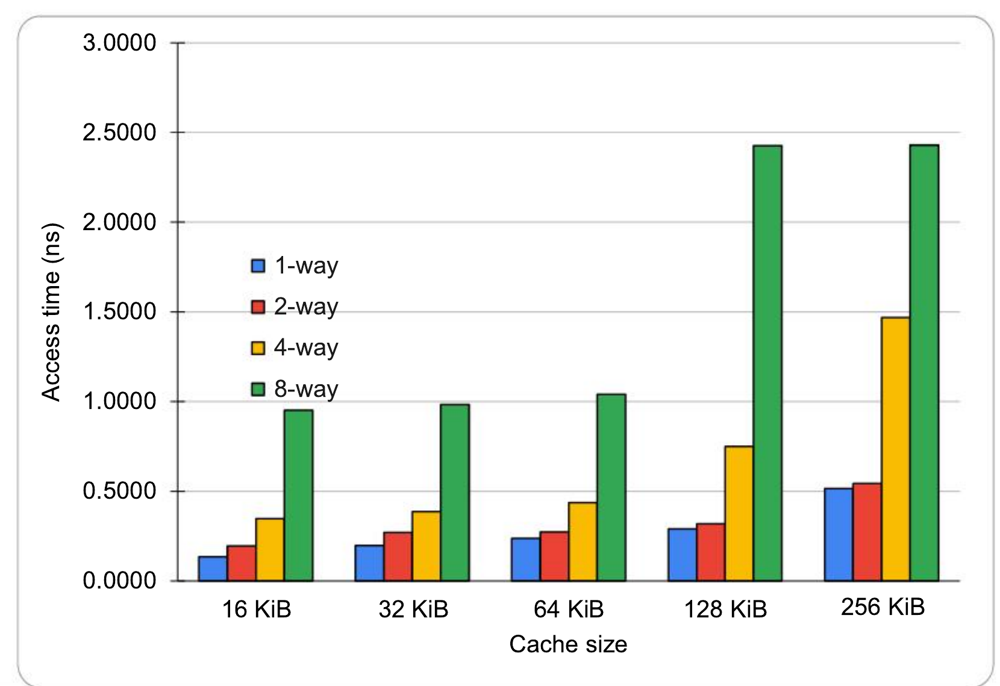
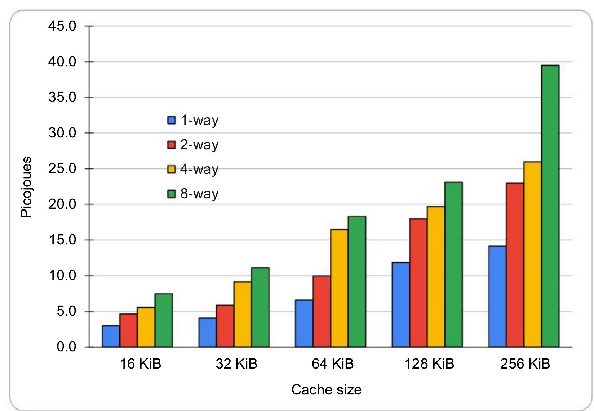
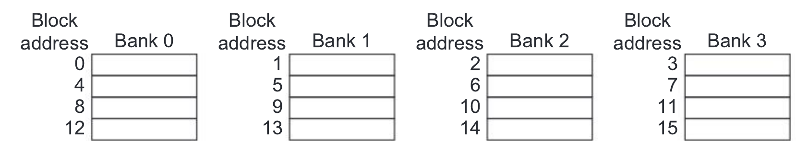
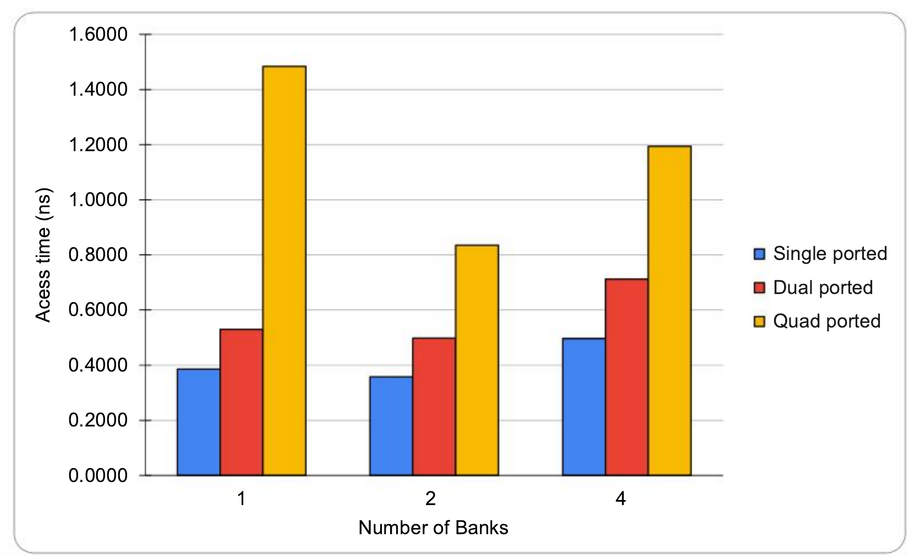
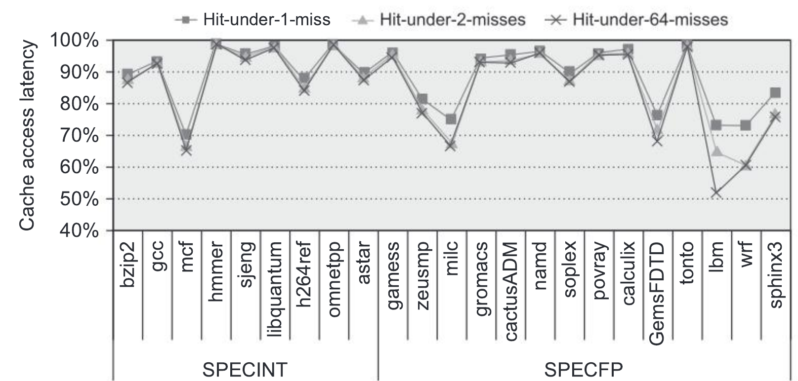
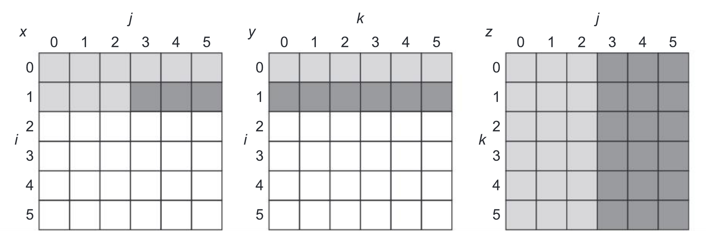
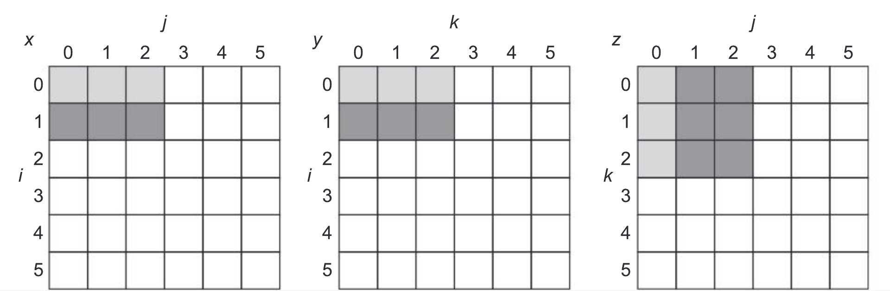
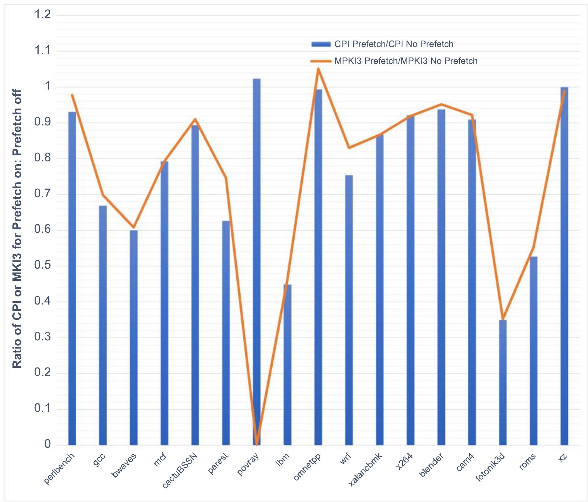
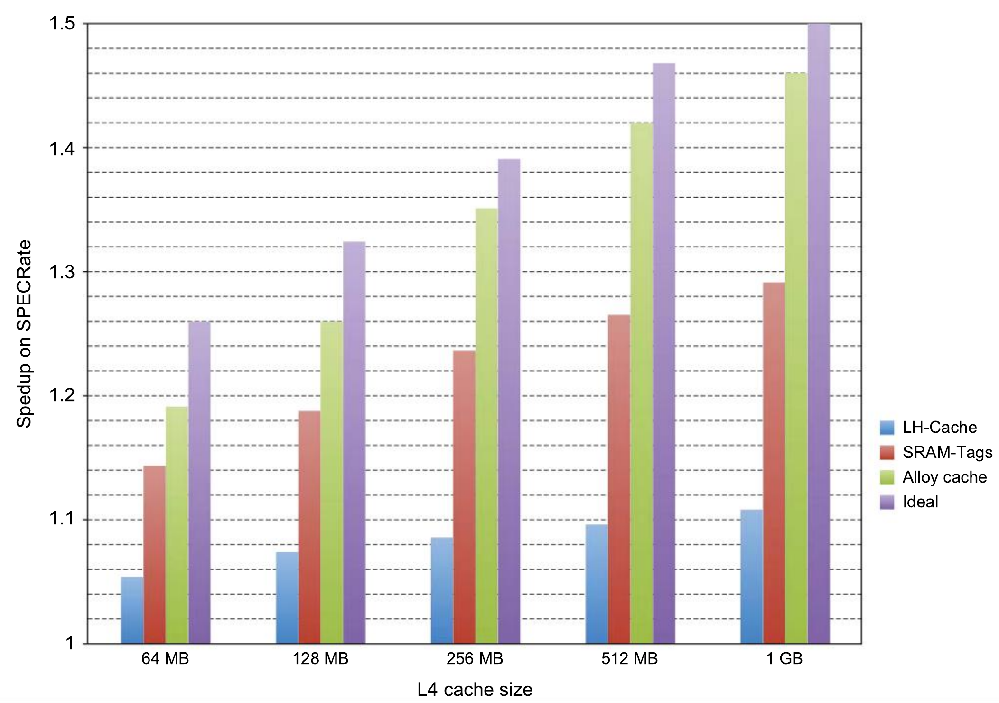

2.3 存储层次的十种高级性能优化
前面的平均访存时间公式给出了衡量 Cache 优化的三个指标：命中时间、失效率和失效开销。结合近年来的发展趋势，我们再加上两个指标：Cache 带宽和功耗。按这 5 个指标，本节要讨论的 10 种高级存储系统优化可以分为 5 类：
- 降低命中时间和功耗：采用容量较小的 Cache，命中时间和功耗都能降低，代价是命中率下降。采用多个存储体也能降低命中时间和功耗，这在容量较大的 L2 和 L3 Cache 中尤为明显。
- 提高 Cache 带宽：包括流水化 L1 Cache、多体 Cache 和非阻塞 Cache。这几种技术对功耗的影响各不相同；如果存储系统支持多个未完成的失效，它们还可能降低失效开销。
- 降低失效开销：包括关键字优先和合并写缓冲，这两种优化对功耗影响很小。此外，采用多个存储体和 HBM 存储器可以缩短从存储器访问一个块的延迟，无论是访问单个块还是并行访问多个块，失效开销都能因此降低。
- 降低失效率：包括编译器优化和相联度。编译时所做的任何改进，显然都能降低功耗。采用组相联会使命中时间略有增加，但能降低失效率。优化组相联 Cache 的替换策略，也可能降低失效率。
- 利用并行降低失效开销或失效率：包括硬件预取和编译器预取。这类优化通常会增加功耗，主要原因是预取来的数据有一部分没有用上。
总的来说，按这个顺序往下，所需硬件越来越复杂。另外，有几种优化需要复杂的编译器技术，有一种要依靠 HBM。本节最后在图 2.17 中汇总这 10 种技术的实现复杂度和性能收益。其中比较简单的几种只作简要介绍，其余的则要多讲一些。
第一种优化：采用虚拟索引和组相联的流水化 L1 Cache
L1 流水化以后，时钟频率可以提高，代价是延迟略有增加。以 Intel 处理器访问指令 Cache 的流水线为例：20 世纪 90 年代中期的 Pentium 需要 1 个时钟周期；20 世纪 90 年代中期到 2000 年的 Pentium Pro 到 Pentium III 需要 2 个时钟周期；2000 年推出的 Pentium 4 以及现在的 Intel i7 和 i9 需要 4 个时钟周期。指令 Cache 流水化，实际上就是增加了流水线的级数，转移预测错误的代价也随之增大。同样，数据 Cache 流水化以后，从发射 load 指令到使用数据，中间要隔更多的时钟周期（见第 3 章）。今天，所有处理器的 L1 都在一定程度上实现了流水化，最简单的也会把访问和命中检测分开；许多高速处理器的 Cache 流水线达到三级或更多。
Cache 流水化以后，实现组相联变得比较容易，命中时间几乎不受影响或完全不受影响，L1 Cache 的命中率因此得以提高。此外，Cache 采用虚拟索引时会出现别名问题，提高相联度也能避免这一问题。
这种 Cache 的访问流水线，典型的做法是把 Cache 访问和命中检测分成四步：
- 地址译码，得到选择 Cache 字线所需的地址。
- 访问指令 Cache 或数据 Cache 的 SRAM。
- 把组内各个元素的 tag与 TLB 送来的物理 tag 比较，判断命中还是失效；如果命中，还要确定命中的是组内哪个元素。
- 用多路选择器选出相应的 Cache 块，把所需的字与块中被访问的部分对齐，然后送给 CPU。
用 CACTI 估算。 要在芯片制造之前了解设计对命中时间和功耗的影响，一种办法是借助 CAD 工具。CACTI 就是这样一个估算程序，它能估算 CMOS 微处理器上各种 Cache 结构的访问时间和能耗，结果与更精细的 CAD 工具相差不到 10%。给定最小特征尺寸后，CACTI 把 Cache 的命中时间表示为以下参数的函数：Cache 容量、相联度、读写端口数以及其他更复杂的参数。图 2.8 是 CACTI 估算的命中时间随 Cache 容量和相联度变化的情况。这些估算值既与 Cache 容量有关，也与工艺有关，所以 CACTI 必须按所用工艺仔细校准；图 2.8 反映的是某一种工艺下的相对权衡。

例题 利用附录 B 中图 B.8 的数据和图 2.8，判断 32 KiB 4 路组相联 L1 Cache 的访存时间是否比 32 KiB 2 路组相联 L1 Cache 更短。假设到 L2 的失效开销是较快的那个 L1 Cache 访问时间的 15 倍，忽略 L2 以外的失效。哪一种 Cache 的平均访存时间更短？
解答 设 2 路组相联 Cache 的访问时间为 1。对 2 路 Cache，有
\[ \begin{aligned} \text{平均访存时间}_\text{2 路} &= \text{命中时间} + \text{失效率} \times \text{失效开销} \\ &= 1 + 0.038 \times 15 = 1.38 \end{aligned} \]
4 路 Cache 的访问时间是 2 路的 1.4 倍，失效开销所占的实际时间折合为 15/1.4 = 10.1，为简单起见取 10：
\[ \begin{aligned} \text{平均访存时间}_\text{4 路} &= \text{命中时间}_\text{2 路} \times 1.4 + \text{失效率} \times \text{失效开销} \\ &= 1.4 + 0.037 \times 10 = 1.77 \end{aligned} \]
从结果看，提高相联度显然得不偿失。不过，现代处理器的 Cache 访问往往是流水化的，它对时钟周期时间的确切影响很难评估，相联度提高了也未必影响周期时间。如果再加上其他 Cache 优化，权衡还会更复杂。
能耗。 选择 Cache 容量和相联度时还要考虑能耗，见图 2.9。从 2 路改为 4 路，能耗增加到原来的 1.1～1.7 倍，具体倍数取决于 Cache 容量。

能耗已经成为关键问题，设计者因此致力于降低 Cache 访问的能耗。除了相联度，Cache 访问能耗还取决于另一个关键因素：Cache 中的块数，因为块数决定了每次要访问的「行」数。在 Cache 总容量不变的前提下，设计者可以增大块来减少行数，但这样可能提高失效率，容量较小的 L1 Cache 尤其如此。
路预测。 路预测（way prediction）既利用了相联度，又能保持直接映射 Cache 的命中速度。它的做法是在 Cache 中保存一些额外的位，用来预测下一次 Cache 访问落在哪一路（即组内哪一块）。根据预测，多路选择器可以提前设置好，选出所要的块；这个时钟周期内只做一次 tag 比较，并且与读 Cache 数据并行进行。如果预测失误，就在下一个时钟周期检查其他块是否匹配。模拟表明，路预测的准确率在 2 路组相联 Cache 中超过 90%，在 4 路组相联 Cache 中为 80%，指令 Cache 的准确率高于数据 Cache。对 2 路组相联 Cache 来说，只要路预测能使访问速度提高 10% 以上，平均访存时间就会缩短，而这很有可能做到。路预测最早用于 20 世纪 90 年代中期的 MIPS R10000，在采用 2 路组相联的处理器中很常见，几款 Cache 为 4 路组相联的 ARM 处理器也采用过。要让路预测的代价保持在较低水平，关键是预测失误时只停顿一个周期，而这在速度很高的处理器中可能很难实现。
牺牲 Cache。 要获得组相联的部分优点，另一种办法是使用牺牲 Cache（victim cache）。所谓牺牲 Cache，就是一个小型 Cache，用来保存最近被逐出的少数几行的内容。Jouppi（1990）证明，对于小型直接映射 L1，一个只有 8 项的小型牺牲 Cache 就能使失效率大幅下降。如今 L1 和 L2 的容量都大了，提高 L1 相联度和采用预取的效果都比牺牲 Cache 好。后面还会看到，近来有些处理器实际上把末级 Cache（LLC，Last-Level Cache）当作牺牲 Cache 使用。
第二种优化：用多存储体和多端口提高 L1 数据 Cache 的带宽
处理器每个时钟周期能执行的最大指令数增加以后，数据 Cache 每个周期能接受的 load 和 store 次数也必须相应增加。早期的多发射处理器每个时钟周期能执行一条 load 和一条 store，较新的处理器每个时钟周期能执行两条 load 和两条 store，这就要求数据 Cache 每个时钟周期接受四次访问！（指令 Cache 的情况不同：2.5 节会讲到，它依靠空间局部性和转移预测，采用先行取指和预取，来满足增长了的取指需求。）
寄存器堆设置多个读写端口是合理的，但 Cache 的存储容量大得多，同样的方案代价要高得多。因此，大多数设计者选择采用多个存储体，可能再辅以有限的多端口。

存储体最初用来提高主存的性能，现在不仅用在现代 DRAM 芯片内部，也用在 Cache 内部。Intel Core i7 的 L1 数据 Cache 有 4 个存储体（每个时钟周期最多支持两次访存）；i9 的 L1 数据 Cache 则采用双端口和 8 个存储体，以应对每个时钟周期四次访存的峰值。
地址映射。 访问自然地分散到各个存储体上时，多体结构的效果最好，因此地址到存储体的映射方式会影响存储系统的表现。一种简单而有效的映射是把块地址依次分配到各个存储体，这称为顺序交叉（sequential interleaving）。例如，有 4 个存储体时，存储体 0 存放地址模 4 余 0 的所有块，存储体 1 存放地址模 4 余 1 的所有块，依此类推。图 2.10 画出了这种交叉方式。
读者也许会以为，即使采用多体结构，数据 Cache 中各次访问之间的冲突仍然会很多。实际上，有两种情况可以减少冲突：一是处理器很少能持续地每个时钟周期访存四次，其他流水线停顿和 Cache 失效都会打断它；二是即使数据 Cache 同时收到四次访问，由于数据的局部性，其中很可能有两次或更多次访问的是同一个 Cache 块，这些访问可以合并成一次 Cache 访问。
例题 假设有 8 个存储体和 4 次访问，其中 1、2 或 3 次访问的是同一个块，求发生冲突的概率。
解答 如果数据 Cache 收到的 4 次访问分别访问不同的块，那么在 8 个存储体下不发生冲突的概率，就是第 2、3、4 次访问都不落在之前访问过的存储体上的概率：
\[ \frac{7}{8} \times \frac{6}{8} \times \frac{5}{8} = 41\% \]
如果有两次访问的是同一个 Cache 块（另两次访问不同的块），这个概率为
\[ \frac{7}{8} \times \frac{6}{8} = 66\% \]
如果只涉及两个存储体，发生冲突的概率降为 12.5%（7/8）。某个存储体发生冲突时，其中一次访存推迟，其他访存照常进行。
此外，只要某个周期准备好访问 Cache 的访存不到四次，冲突的概率也会降低。采用双端口同样能提高带宽，而且不需要解决冲突。如果 4 个存储体都是双端口的，冲突概率会低得多，因为要有三次访问落在同一个存储体才会发生冲突。
采用双端口总会增加访问时间，多个存储体的影响则取决于相联度、Cache 容量等其他因素。那么，从访问时间看，这几种提高 L1 Cache 带宽的方案孰优孰劣？图 2.11 给出了 CACTI 估算的访问时间，存储体数取 1、2、4，端口数取 1、2、4。

例题 为简单起见，假设任何冲突的效果都是使 Cache 访问时间增加 1 ns（即使发生四次冲突也是如此）。利用图 2.11 的数据，假设同时有四次访问，下面哪种设计的访问时间最短：
- 单端口，4 个存储体
- 双端口，2 个存储体（两个存储体都是双端口的）
- 四端口
解答 先看单端口的情况，发生冲突的概率为 \(1 - \frac{3}{4} \times \frac{2}{4} \times \frac{1}{4} = 90\%\)。
\[ \text{访问时间}_\text{单端口} = 0.5\ \text{ns} + 0.9 \times 1\ \text{ns} = 1.4\ \text{ns} \]
双端口时，发生冲突的概率为 37.5%。有兴趣的读者可以逐一检查全部 16 种可能的访问组合，验证其中只有 6 种出现三次访问落在同一个存储体的情况。
\[ \text{访问时间}_\text{双端口} = 0.5\ \text{ns} + 0.375 \times 1\ \text{ns} = 0.875\ \text{ns} \]
最后，四端口时只有一个存储体，访问时间为 1.5 ns。在这组参数（以及冲突代价）下，双端口、2 个存储体的方案最好。
第三种优化：用更好的替换策略降低失效率
直接映射 Cache 的替换策略无须选择，因为一个块只能放在一个位置。相联度提高以后，发生失效时 Cache 系统必须决定替换组内的哪个元素。选得好可以降低失效率，相联度越高效果越明显，因为可供替换的块更多。但要选得好，就要为每个 Cache 块额外记录一些信息。L1 Cache 的占空比很高，很难做到这一点，所以 L1 Cache 通常采用随机替换或某种简单的近似方法。L2 和 L3 Cache 的占空比较低，失效开销又较高，采用优化的替换策略就是合理的。
MIN 与 LRU。 最优的替换策略是存在的，称为 Belady 的 MIN 策略：替换将来最晚才会用到的块。遗憾的是，正如 Yogi Berra 所说：「预测是很难的，尤其是预测未来。」尽管如此，MIN 既为设计替换策略提供了一种思路，也为衡量实用算法提供了一个基准。另一种常被提出的方案是 LRU（Least Recently Used，最近最少使用），它替换过去最久没有用过的块。精确的 LRU 很难实现，因为它要求对组内所有块维护一个先后次序。
NRU。 因此，实际采用的是更新更简单的伪 LRU（或称近似 LRU）方案，其中比较简单的一种是 NRU（Not Recently Used，最近未使用）。NRU 为组内每个元素保留一位，表示这个块最近没有用过；某个元素一被访问，就把它的这一位清零。发生失效时，从 NRU 位为 1 的块中选一个替换，然后把除新换入的块以外的所有 NRU 位都置 1。如果组内有多个块的 NRU 位为 1（意味着所有块都最近访问过，或者都没有访问过），就随机替换组内的一个元素。NRU 实现起来很简单，一次访问与某个组匹配之后，只需要写一位。几款较早的 Intel 处理器在 L2 和 LLC 中采用过 NRU，L1 Cache 也常用 NRU。
最近引用预测计数器。 另一种代价不高的近似 LRU 方法是对 NRU 的推广：每个块用更多的位组成一个计数器，设法预测将来最晚才会用到的块。例如，每个块可以用 2 位构成一个饱和计数器，这种计数器称为最近引用预测计数器（recently referenced prediction counter）。它的规则如下：
- Cache 命中时，把这个块的计数器置为 0。
- Cache 失效时，如果有块的计数值为 3，就替换这个块，并把它的计数器置为 2。值 2 表示这个块不久之后可能再次使用，也可能不会。
- 如果没有块的计数器为 3，就把组内所有计数器加 1，直到至少有一个块的计数器为 3，再替换这个块。
这种方案的关键思想是设法区分两类访问：一类是只使用一次块的流式访问，另一类是反复使用块的访问。
Jaleel 等人（2010）模拟了多种这类引用预测替换方案，包括 NRU、LRU 和 2 位最近引用方案。在 2 MB、16 路的 L2（大致相当于 Intel i7 单个核的 L2）上，NRU 的性能比 LRU 差约 1%，2 位最近引用预测器则比 LRU 好约 5%。在 4 个核、LLC 为 8 MB 的多核多道程序环境下，2 位方案的改进达到 7%。原因可能是多道程序的活动使 LLC 中只使用一次的访问增多，而 2 位方案处理这类流式访问比 1 位方案好。这种方案可以推广到 \(n\) 位计数器，\(n\) 越大，方案越接近真正的 LRU。像 2 位方案那样对计数器加权，就可以优先保留失效之后至少命中过一次的块，这些块不大可能是只访问一次的流式数据。
人们还提出了许多更复杂的替换策略，力求比基于 LRU 的方案选得更准，其实质是像操作系统管理虚拟存储那样，对工作集的行为建模。有些研究表明改进很显著。如果这些策略的实现开销足够低，性能又仍然优于加权的近似 LRU 方案，就有可能用于将来的 LLC。
第四种优化：用多体 L2 和 L3 Cache 降低功耗和延迟、提高带宽
L1 数据 Cache 采用多个存储体，主要是为了提高 load/store 带宽；多个存储体还能为非阻塞 Cache 的失效提供更高的回填带宽，这项优化稍后介绍。在容量更大的 L2 和 L3 Cache 中，多个存储体有三方面的作用：一是降低功耗（与在 DRAM 中的作用一样），二是缩短延迟，三是提高响应 L1 或 L2 非阻塞失效的带宽。Intel Core i9 的 L2 有 8 个存储体，Arm Cortex 处理器采用的 L2 Cache 则有 1～4 个存储体。Intel 多核处理器把 LLC 分布在各个核上，所以存储体数随核数增加而增加。
第五种优化：用非阻塞 Cache 提高 Cache 带宽
允许乱序执行的流水线计算机（见第 3 章）在数据 Cache 失效时不必停顿。例如，处理器在等待数据 Cache 送回失效数据的同时，可以继续从指令 Cache 中取指令。非阻塞 Cache（nonblocking cache）又称无锁 Cache（lockup-free cache），它在失效期间仍能继续提供命中，使这种做法的潜在收益更大。这种「失效下命中」（hit under miss）优化让 Cache 在失效期间继续发挥作用，而不是让处理器完全停顿，从而降低了有效失效开销。还有一种更精巧也更复杂的做法：如果 Cache 能让多个失效相互重叠，有效失效开销还能进一步降低，这就是「多重失效下命中」（hit under multiple miss）或「失效下失效」（miss under miss）优化。第二种做法只有在存储系统能够同时处理多个失效时才有好处。所有高性能处理器（如近来的 Intel 和 AMD 处理器）通常两种都支持，而许多低端处理器只在 L2 中提供有限的非阻塞支持。
效果评估。 Farkas 和 Jouppi（1994）研究了非阻塞 Cache 降低失效开销的效果，假设 Cache 为 8 KiB，失效开销为 14 个周期（符合 20 世纪 90 年代初的情况）。他们发现，允许一次失效下命中时，SPECINT92 基准测试程序的有效失效开销降低了 20%，SPECFP92 降低了 30%。Li 等人（2011）在三方面更新了这项研究：改用多级 Cache，对失效开销采用更符合现代情况的假设，并改用规模更大、要求更高的 SPECCPU2006 基准测试程序。这项研究以 Intel i7 的单个核为模型（峰值速度下每个时钟周期能发出两次数据访存请求），运行 SPECCPU2006 基准测试程序。图 2.12 给出了允许 1 次、2 次和 64 次失效下命中时数据 Cache 访问延迟的降低情况，存储系统的其他细节见图注。与早先的研究相比，Cache 容量更大，又增加了 L3 Cache，所以收益变小了：SPECINT2006 基准测试程序的 Cache 延迟平均降低约 9%，SPECFP2006 平均降低约 12.5%。

有效失效开销。 在非阻塞 Cache 中，Cache 失效不一定使处理器停顿，因此很难判断单次失效的影响，平均访存时间也很难计算。有效失效开销不是各次失效时间之和，而是处理器停顿时间中没有被重叠掉的部分。非阻塞 Cache 的收益取决于三个因素：一是失效开销（有多个失效时），二是访存模式，三是在有失效未完成时处理器还能执行多少条指令。
一般来说，L1 数据 Cache 失效而 L2 Cache 命中时，乱序处理器能隐藏大部分失效开销；但如果更低一级的 Cache 也失效，乱序处理器就很难隐藏大部分失效开销了。要支持多少个未完成的失效，取决于多种因素：
- 失效流中的时间局部性和空间局部性。它决定了一次失效是否会向更低一级 Cache 或存储器发起新的访问。
- 响应请求的存储器或 Cache 的带宽。
- 处理器在最低一级 Cache（失效时间最长）允许的未完成失效数。最低一级允许多少，更高一级至少也要支持多少，因为失效必定从最高一级 Cache 开始。
- 存储系统的延迟。
下面用一个简化的例题说明其中的关键思想。
例题 假设主存访问时间为 36 ns，存储系统的持续传输率为 16 GiB/s。块大小为 64 字节，假设在给定的请求流下能够维持峰值带宽，并且各次访问从不冲突，那么最多需要支持多少个未完成的失效？如果一次访问与前四次访问之一冲突的概率为 50%，并假设这次访问必须等到先前的访问完成，估计最多有多少个未完成的访问。为简单起见，忽略失效之间的时间。
解答 第一种情况，假设能够维持峰值带宽，存储系统每秒可以支持 \((16 \times 10)^9/64 = 2.5\) 亿次访问。每次访问需要 36 ns，因此可以同时支持 \(250 \times 10^6 \times 36 \times 10^{-9} = 9\) 次访问。如果冲突概率大于 0，就需要更多的未完成访问，因为冲突的访问无法开始处理；存储系统需要的独立访问只会更多，而不是更少！作近似估计时，可以简单地假设有一半访存不必发给存储器。这样，要支持的未完成访问数就要加倍，即 18 次。
Li、Chen、Brockman 和 Jouppi 的研究还发现：对整数程序，允许一次失效下命中时 CPI 降低约 7%，允许 64 次时降低约 12.7%；对浮点程序，允许一次失效下命中时 CPI 降低 12.7%，允许 64 次时降低 17.8%。这些降幅与图 2.12 中数据 Cache 访问延迟的降幅非常接近。
非阻塞 Cache 的实现
非阻塞 Cache 有可能提高性能，但实现起来并不简单。首先要解决两类难题：一是仲裁命中与失效之间的争用；二是跟踪未完成的失效，以便知道 load 或 store 何时可以继续执行。
命中与失效的争用。 在阻塞 Cache 中，失效使处理器停顿，失效处理完之前不会再有对 Cache 的访问。在非阻塞 Cache 中则不然，命中可能与从存储层次下一级返回的失效发生冲突。如果允许多个未完成的失效（近来几乎所有处理器都允许），失效与失效之间也可能冲突。这些冲突必须解决，通常的办法是让命中优先于失效，再对相互冲突的失效（如果有）排定次序。
跟踪未完成的失效。 第二个问题源于要同时跟踪多个未完成的失效。在阻塞 Cache 中，未完成的失效最多只有一个，返回的是哪个失效总是清楚的；在非阻塞 Cache 中，这种情况很少见。乍看起来，失效似乎总是按顺序返回，只需维护一个简单的队列，把返回的失效与等待最久的请求对应起来就行了。但考虑 L1 中发生的一次失效：它在 L2 中可能命中，也可能失效；如果 L2 也是非阻塞的，失效返回 L1 的顺序就不一定与它们发生的顺序相同。Cache 访问时间不一致的多核系统和其他多处理器系统（称为 NUCA）也会带来同样的复杂情况。
失效返回时，处理器必须知道两件事：一是哪条 load 或 store 引起了这次失效，这样这条指令才能继续执行；二是数据应当放到 Cache 的什么位置（以及这个块的 tag 如何设置）。近来的处理器把这些信息保存在一组寄存器中，通常称为失效状态处理寄存器（MSHR）。允许 \(n\) 个未完成的失效，就有 \(n\) 个 MSHR。每个 MSHR 记录的信息包括：这次失效的数据放到 Cache 的什么位置，这次失效的各个 tag 位的值，以及引起这次失效的是哪条 load 或 store（下一章会介绍如何跟踪这一信息）。处理过程如下：
- 发生失效时，分配一个 MSHR 来处理这次失效，填入这次失效的有关信息，并用这个 MSHR 的编号给访存请求打上标记。
- 存储系统返回数据时带上这个标记，Cache 系统据此把数据和 tag 信息送到相应的 Cache 块，并「通知」引起失效的 load 或 store：数据已经可用，可以恢复执行。
非阻塞 Cache 显然需要额外的逻辑，因此要付出一定的能耗代价。但这一代价很难精确评估，因为非阻塞 Cache 可能减少停顿时间，从而缩短执行时间，能耗也随之降低。
除了上述问题，多处理器的存储系统，无论是在单个芯片内还是跨多个芯片，还必须解决与 Cache 一致性（coherency）和存储一致性（consistency）有关的复杂实现问题。此外，Cache 失效不再是原子操作（请求和响应是分开的，可能与多个请求交错进行），因此有可能发生死锁。第 5 章还会讨论这些问题，在线附录 I 的 I.7 节则讨论得更详细。
第六种优化：关键字优先和提前重启，降低失效开销
处理器通常一次只需要块中的一个字。这项技术就是基于这一点，它的思路是「不等」：不必等整个块装入，先把所请求的字送给处理器，让处理器重新启动。具体有两种做法：
- 关键字优先（critical word first）：先向存储器请求失效的那个字，它一到达就送给处理器；处理器继续执行，同时填充块中其余的字。
- 提前重启（early restart）：仍按正常顺序取块中的字，但所请求的字一到达，就立即送给处理器，让处理器继续执行。
块不大时，这两种技术的收益很小，因此一般只有 Cache 块较大的设计才能从中受益。块的其余部分在填充时，Cache 通常仍能继续响应对其他块的访问。
不过，由于空间局部性，下一次访问很可能就落在这个块的其余部分。这时的失效开销与非阻塞 Cache 一样，不容易计算。采用关键字优先时，如果出现了第二个请求，有效失效开销就是从这次访问开始、到第二部分数据到达为止，其间没有被重叠掉的那段时间。所以，关键字优先和提前重启的收益取决于两点：一是块的大小，二是块中尚未取回的部分再次被访问的可能性。以 i7 6700 为例，它采用了提前重启和关键字优先；在它上面运行 SPECint2006，对失效尚未完成的块，访问次数超过一次（平均 1.23 次，范围为 0.5～3.0 次）。2.6 节将更详细地考察一个先进存储层次的性能。
第七种优化：通过编译器优化降低失效率
前面介绍的技术都要修改硬件，下面这种技术则不改动任何硬件，就能降低失效率。
这种神奇的效果来自软件优化，这也正是硬件设计者最喜欢的解决办法。处理器与主存之间的性能差距越来越大，促使编译器设计者仔细研究存储层次，看能否通过编译时的优化提高性能。这方面的研究同样分两类：一类减少指令失效，一类减少数据失效。下面介绍的优化，许多现代编译器都已采用。
循环交换
有些程序含有嵌套循环，访问存储器中数据的次序与数据的存放次序不一致。只要交换循环的嵌套次序，就能让程序按存放次序访问数据。在数组装不进 Cache 的前提下，这一技术通过改善空间局部性来减少失效：调整次序以后，一个 Cache 块中的数据在被丢弃之前能得到最充分的利用。例如，x 是大小为 [5000,100] 的二维数组，x[i,j] 与 x[i,j+1] 相邻存放（数组按行排列，这种次序称为行优先）。下面两段代码说明了怎样优化对它的访问：
/* 修改前 */
for (j = 0; j < 100; j = j + 1)
for (i = 0; i < 5000; i = i + 1)
x[i][j] = 2 * x[i][j];
/* 修改后 */
for (i = 0; i < 5000; i = i + 1)
for (j = 0; j < 100; j = j + 1)
x[i][j] = 2 * x[i][j];修改前的代码以 100 个字为步长在存储器中跳跃；修改后的代码先访问完一个 Cache 块中的所有字，再转到下一个块。这一优化改善了 Cache 性能，执行的指令数却不受影响。
分块
分块通过改善时间局部性来减少失效。这里处理的同样是多个数组，但有的按行访问，有的按列访问。由于每次循环迭代既要用到行又要用到列，数组无论逐行存放（行优先顺序）还是逐列存放（列优先顺序），都解决不了问题。访问方向这样相互正交，即使做了循环交换之类的变换，仍有很大的改进余地。
分块算法不对数组的整行或整列操作，而是对子矩阵，即二维的块操作，目标是让装入 Cache 的数据在被替换之前尽可能多地得到访问。下面这段矩阵乘法代码说明了为什么需要这种优化：
/* 修改前 */
for (i = 0; i < N; i = i + 1)
for (j = 0; j < N; j = j + 1)
{r = 0;
for (k = 0; k < N; k = k + 1)
r = r + y[i][k]*z[k][j];
x[i][j] = r;
};两个内层循环要读取 z 的全部 N×N 个元素，反复读取 y 中同一行的 N 个元素，并写入 x 的一行 N 个元素。图 2.13 是这三个数组访问情况的一个快照：深色表示最近访问过，浅色表示较早访问过，白色表示尚未访问。
容量失效的次数显然取决于 N 和 Cache 的大小：
- Cache 能装下全部三个 N×N 矩阵时，只要没有 Cache 冲突，就不会有问题；
- Cache 能装下一个 N×N 矩阵和一行 N 个元素时，至少
y的第i行和数组z有可能留在 Cache 中； - Cache 比这还小时，
x和z都可能发生失效。
最坏情况下，\(N^3\) 次运算要访问 \(2N^3 + N^2\) 个存储字。
为了保证正在访问的元素能装进 Cache，把原来的代码改成对 B×B 的子矩阵计算。这样，两个内层循环每次只按 B 的步长计算，而不是走完 x 和 z 的全长。B 称为分块因子。（假设 x 已初始化为 0。）
/* 修改后 */
for (jj = 0; jj < N; jj = jj + B)
for (kk = 0; kk < N; kk = kk + B)
for (i = 0; i < N; i = i + 1)
for (j = jj; j < min(jj + B,N); j = j + 1)
{r = 0;
for (k = kk; k < min(kk + B,N); k = k + 1)
r = r + y[i][k]*z[k][j];
x[i][j] = x[i][j] + r;
};

图 2.14 是分块以后三个数组的访问情况。只考虑容量失效时，访问的存储字总数为 \(2N^3/B + N^2\)，大约降为原来的 1/B。可见分块同时利用了空间局部性和时间局部性：y 得益于空间局部性，z 得益于时间局部性。例子中用的是正方形块（B×B），也可以用矩形块；矩阵不是方阵时，就必须用矩形块。
我们的目标是减少 Cache 失效，但分块也能帮助寄存器分配：把分块尺寸取得足够小，使一个块能放进寄存器，就能使程序中 load 和 store 的数目最少。
第 4 章的 4.8 节将会看到，在基于 Cache 的处理器上运行以矩阵为主要数据结构的应用，必须采用 Cache 分块才能获得良好的性能。
第八种优化：指令和数据的硬件预取，降低失效开销或失效率
非阻塞 Cache 让执行与访存重叠，从而有效地降低了失效开销。另一种办法是预取：在处理器请求之前，就把所需的内容取进来。指令和数据都可以预取，既可以直接取到 Cache 中，也可以取到一个访问速度比主存快的外部缓冲器中。
指令预取。 指令预取常常由 Cache 之外的硬件完成。典型的做法是：发生失效时，处理器取回两个块，一个是所请求的块，另一个是紧随其后的块。所请求的块返回后放入指令 Cache，预取的块放入指令流缓冲器。如果所请求的块已经在指令流缓冲器中，就取消原来的 Cache 请求，从流缓冲器中读出这个块，同时发出下一个预取请求。
数据预取。 类似的方法也可以用于数据访问（Jouppi，1990）。Palacharla 和 Kessler（1994）用一组科学计算程序做了研究，所考虑的多个流缓冲器既能处理指令，也能处理数据。他们发现，对于有两个 64 KiB 四路组相联 Cache（一个存指令、一个存数据）的处理器，8 个流缓冲器能够捕获全部失效的 50%～70%。
Intel 处理器的硬件预取。 Intel Core i7 和 i9 支持向 L1 和 L2 的硬件预取，最常见的情形是预取下一行。L1 和 L2 失效率都较低的应用，预取带来的改进不大。即使 L1 或 L2 的失效率相当高，预取也必须谨慎使用，因为「坏」的预取可能替换掉有用的 Cache 块，还要占用 Cache 或存储器的带宽。Xeon Skylake-SP 的硬件预取与 Sapphire Rapids 非常相似，有四个数据预取器：L1 数据 Cache 单元预取器（DCUI）、L1 数据 Cache 指令指针步长预取器（DCUP）、L2 数据 Cache 空间预取器（L2A）和 L2 数据 Cache 流预取器（L2P）。在访存较密集的 SPECCPU2017 基准测试程序中，L2P 最为重要，CPI 的改进有 70% 来自它。L2 预取器从 L3 或存储器取数据，结果直接放入 L2；如果预取访问的是存储器，结果不放入 L3。
图 2.15 给出了多核 Xeon 处理器 Skylake-SP 打开硬件预取以后，SPECCPU2017 中部分程序的总体性能改进（以 CPI 的降低来衡量）。各程序的结果差别很大：两个基准测试程序性能略有下降，五个改进约 10% 或更少，还有两个性能提高到原来的两倍以上。图 2.15 还给出了 L3 每千条指令失效数（MPKI，Misses Per K Instructions）的降低情况，它与 CPI 的降低高度相关。
预取不计为失效。因此，L2P 向 L2 Cache 预取时，既能消除在 L3 中命中的 L2 失效，也能消除在 L3 中同样失效的 L2 失效。L3 失效的时间大约是 L2 失效的 4 倍，所以如图 2.15 所示，性能改进主要来自 L3 失效的减少。去掉预取，这些被消除的 L3 失效中有很多甚至全部都会发生；但预取方案并不完美，本身也会引起一些额外的失效。比较打开和关闭预取时 L3 请求的数据总量，就能看出这一点：打开预取后，L3 Cache 请求的数据比关闭时多 19%。在少数程序中（如 bwaves 和 lbm），预取器看来非常准确，L3 流量增加不到 1%。
对功耗的影响。 预取效果好时，对功耗的影响可以忽略不计，甚至略有好处；如果预取的数据没有用到，或者有用的数据被替换出去，预取就会明显增加功耗。

第九种优化：编译器控制的预取，降低失效开销或失效率
除了硬件预取，也可以由编译器插入预取指令，在处理器需要数据之前就发出请求。预取有两种：
- 寄存器预取：把值装入寄存器；
- Cache 预取：只把数据装入 Cache，不装入寄存器。
两种预取都可以是引发异常的（faulting），也可以是不引发异常的（nonfaulting），区别在于遇到虚拟地址故障和保护违例时，预取的地址是否引发异常。不引发异常的预取在本应引发异常时直接变成空操作，这正是我们所希望的。
最有效的预取对程序是「语义上不可见的」：它不改变寄存器和存储器的内容，也不会引起虚拟存储故障。今天大多数处理器都提供不引发异常的 Cache 预取。本节假定采用这种预取，它也称为非绑定（nonbinding）预取。
只有处理器在预取数据的同时能够继续执行，预取才有意义。也就是说，Cache 在等待预取数据返回期间不能停顿，而要继续提供指令和数据。因此，这类计算机的数据 Cache 通常是非阻塞的。
编译器控制的预取与硬件预取的目标相同，都是让执行与数据预取重叠。循环便于做预取优化，是主要的优化对象：失效开销较小时，编译器只需把循环展开一两次，把预取和执行调度在一起；失效开销较大时，编译器采用软件流水（见附录 H），或把循环展开多次，为后面的迭代预取数据。
不过，发出预取指令本身有指令开销，编译器必须保证开销不超过收益。程序只对可能发生 Cache 失效的访问做预取，就能避免不必要的预取，同时显著缩短平均访存时间。
例题 对于下面的代码，先判断哪些访问可能引起数据 Cache 失效，再插入预取指令以减少失效，最后计算执行的预取指令数和通过预取避免的失效次数。假设数据 Cache 为 8 KiB、直接映射、块大小 16 字节，采用写回和写分配。a 和 b 都是双精度浮点数组，元素长 8 字节。a 有 3 行 100 列，b 有 101 行 3 列。程序开始时，两个数组都不在 Cache 中。
解答 编译器首先要确定哪些访问可能引起 Cache 失效，否则就会把时间浪费在为本来会命中的数据发预取指令上。
a 的元素按存放次序写入，因此 a 能得益于空间局部性：j 为偶数时失效，为奇数时命中。a 有 3 行 100 列，对它的访问引起 3 × (100/2) 即 150 次失效。
b 的访问次序与存放次序不同，得不到空间局部性的好处，但两次得益于时间局部性：一是 i 的每次迭代访问的都是同样的元素，二是 j 的每次迭代都要用到上一次迭代用过的 b 值。不考虑可能的冲突失效，b 的失效发生在两处：i = 0 时对 b[j+1][0] 的访问，以及 j = 0 时对 b[j][0] 的第一次访问。i = 0 时 j 从 0 变到 99，因此 b 引起 100 + 1 即 101 次失效。
这样，这个循环的数据 Cache 失效大约是 a 的 150 次加上 b 的 101 次，共 251 次。
为了简化优化，我们不考虑为循环最初的几次访问做预取：这些数据可能已经在 Cache 中，否则就为 a 或 b 的前几个元素付出失效开销。我们也不考虑在循环末尾屏蔽那些越过 a 末尾（a[i][100] … a[i][106]）和 b 末尾（b[101][0] … b[107][0]）的预取；如果这些预取会引发异常，就不能这样省事了。假设失效开销很大，至少要提前比如 7 次迭代开始预取，换句话说，到第 8 次迭代之前预取都没有收益。为加入预取而对前面代码所做的改动用下划线标出。
for (j = 0; j < 100; j = j + 1) {
prefetch(b[j + 7][0]);
/* 7 次迭代之后要用的 b(j,0) */
prefetch(a[0][j + 7]);
/* 7 次迭代之后要用的 a(0,j) */
a[0][j] = b[j][0] * b[j + 1][0];};
for (i = 1; i < 3; i = i + 1)
for (j = 0; j < 100; j = j + 1) {
prefetch(a[i][j + 7]);
/* 7 次迭代之后要用的 a(i,j) */
a[i][j] = b[j][0] * b[j + 1][0];}修改后的代码预取了 a[i][7] 到 a[i][99]，以及 b[7][0] 到 b[100][0]，没有预取到的失效减少为：
- 第一个循环中元素
b[0][0],b[1][0], …,b[6][0]的 7 次失效； - 第一个循环中元素
a[0][0],a[0][1], …,a[0][6]的 4 次失效（\(\lceil 7/2 \rceil\)；由于空间局部性，每个 16 字节的 Cache 块只失效 1 次）； - 第二个循环中元素
a[1][0],a[1][1], …,a[1][6]的 4 次失效（\(\lceil 7/2 \rceil\)）； - 第二个循环中元素
a[2][0],a[2][1], …,a[2][6]的 4 次失效（\(\lceil 7/2 \rceil\)）。
没有预取到的失效共 19 次。用执行 400 条预取指令的代价，避免了 232 次 Cache 失效，这很可能是一个合理的权衡。
例题 计算上一个例题节省的时间。忽略指令 Cache 失效，并假设数据 Cache 中没有冲突失效和容量失效。假设各次预取之间、预取与 Cache 失效之间都可以重叠，从而按最大存储带宽传输数据。不计 Cache 失效时，各循环的关键时间是：原来的循环每次迭代 7 个时钟周期，第一个预取循环每次迭代 9 个时钟周期，第二个预取循环每次迭代 8 个时钟周期（含外层 for 循环的开销）。一次失效需要 100 个时钟周期。
解答 原来的双重循环执行乘法 3 × 100 即 300 次，每次迭代 7 个时钟周期，共 300 × 7 即 2100 个时钟周期；Cache 失效再增加 251 × 100 即 25,100 个时钟周期，总计 27,200 个时钟周期。
第一个预取循环迭代 100 次，每次 9 个时钟周期，共 900 个时钟周期；Cache 失效增加 11 × 100 即 1100 个时钟周期，总计 2000 个时钟周期。第二个循环执行 2 × 100 即 200 次，每次 8 个时钟周期，共 1600 个时钟周期；Cache 失效增加 8 × 100 即 800 个时钟周期，总计 2400 个时钟周期。
由上一个例题可知，执行这两个循环共需 2000 + 2400 即 4400 个时钟周期，其间执行了 400 条预取指令。假设预取与其余执行完全重叠，预取代码的速度就是原来代码的 27,200/4400 即 6.2 倍。
指针的预取。 数组优化容易理解，但现代程序更多地使用指针。Luk 和 Mowry（1999）证明，基于编译器的预取有时也能推广到指针。他们研究了 10 个使用递归数据结构的程序，访问一个结点时预取它的所有指针，结果一半程序的性能提高了 4%～31%，其余程序的性能与原来相差也在 2% 以内。问题在于两点：一是预取的数据是否已经在 Cache 中，二是预取是否足够早，使数据在需要时已经到达。
许多处理器都提供 Cache 预取指令，高端处理器（如 Intel Core i7 和 i9）通常还会在硬件中做某种形式的自动预取。
第十种优化：多条存储总线和多个存储模块，提高带宽
台式机中的高速处理器（如 Intel i9 和 AMD Ryzen）、服务器中的高速处理器（Intel Xeon 和 IBM Power 系列），以及用于图形或深度学习的领域专用处理器，常常使用多个存储通道来提高可用的存储带宽。多个存储通道可以独立访问，一次访问不会使另一次访问停顿，因此也能有效地降低失效开销。
SDRAM 与 HBM 混合。 有了多条存储总线，就可以设计两种总线结构不同的存储通道，让系统同时使用 SDRAM 和 HBM。HBM 要求的信号约定与普通 SDRAM 不同，这样混合使用，既能发挥 HBM 存储器在速度和带宽上的优势，又不会使存储器的总容量受限于少数几个 HBM 堆叠。以这种方式混用不同类型的存储器，确实会形成非一致存储结构（NUMA，NonUniform Memory Architecture）；要利用这种能力，就必须把关键数据放到较快的 HBM 存储器中。在领域专用处理器中，这项工作通常由软件控制完成，一般还需要一种领域专用语言来指导软件在不同存储器之间分配和移动数据（见第 7 章）。
HBM 用作 Cache。 除了显式管理的 NUMA，另一种做法是把 HBM 存储器用作 Cache，最新的 Intel 和 AMD 处理器也支持这种做法。
HBM Cache 实质上是新增的 L4，即末级 Cache（LLC，Last-Level Cache），容量可以达到最大的片上 L3 Cache 的 10 倍以上。但这么大的、基于 DRAM 的 Cache 带来一个问题：tag放在哪里？这取决于 tag 的数量。假设块大小为 64B，1 GiB 的 L4 Cache 就需要 96 MiB 的 tag，大致相当于一个大型多核处理器全部 Cache 所用的 SRAM。增大块可以减少 tag 数，但块很大时失效率可能升高，冲突失效和一致性失效尤其如此。
L-H 方案。 如果把 LLC 的 tag 存放在 HBM 中而不是片上，就可以采用较小的块和较多的 tag。乍看起来这行不通，因为每次访问 L4 都要访问两次 DRAM：一次取 tag，一次取数据。Loh 和 Hill（2011）为此提出了一个巧妙的方案（我们称之为 L-H 方案）：把 tag 和数据放在 HBM SDRAM 的同一行中。打开一行（以及最终关闭它）需要很长时间，但在已打开的行中访问另一部分，CAS 延迟只有访问新行时间的三分之一左右。因此，可以先访问块的 tag 部分，命中以后再用一次列访问选出所需的字。
合金 Cache。 Qureshi 和 Loh（2012）提出了一种缩短命中时间的改进方案，称为合金 Cache（alloy cache）。合金 Cache 把 tag 和数据熔铸在一起，并采用直接映射结构。这样，直接索引 HBM Cache，用一次突发传输同时送出 tag 和数据，就能把 LLC 的访问时间缩短到一个 HBM 周期。与 L-H 方案相比，合金 Cache 的命中时间降为不到原来的一半，代价是失效率提高到原来的 1.1～1.2 倍。
遗憾的是，这两种方案发生失效时，都需要两次完整的 DRAM 访问：先访问一次取得 tag，接着再访问更慢的主存。图 2.16 给出了以 SPECRate 方式运行 10 个访存密集的 SPECCPU2006 基准测试程序得到的加速比。合金 Cache 增加了一个小型失效预测器，预测到会失效时，就设法省去最初那次 HBM 访问。加上失效预测器以后，合金 Cache 的性能超过了 L-H 方案，甚至超过了不实用的 SRAM tag 方案。原因在于失效预测器访问时间短，预测结果又好，因此判定一次失效所需的时间更短，失效开销也就更低。合金 Cache 的性能接近理想情况（Ideal），即失效预测完美、命中时间最短的 LLC。

HBM 很可能以多种配置得到广泛应用：在某些高性能专用系统中承担整个存储系统，在有多条存储总线的设计中则把一部分存储器用作 LLC。
存储层次优化小结
改进命中时间、带宽、失效开销和失效率的技术，一般也会影响平均访存时间公式中的其他组成部分，以及存储层次的复杂度。图 2.17 对这些技术做了总结，并估计了它们对复杂度的影响：+ 表示改进了这一因素，– 表示损害了这一因素，空白表示没有影响。一般来说，没有哪一种技术能改进一个以上的类别。
图 2.17 高级 Cache 优化小结：各技术对 Cache 性能、功耗和复杂度的影响。一种技术一般只对一个因素有帮助，但预取是例外：预取足够早时可以减少失效，不够早时也能降低失效开销。+ 表示该技术改进了这一因素，– 表示损害了这一因素，空白表示没有影响。复杂度的衡量是主观的，0 表示最容易，3 表示有挑战性。
| 技术 | 命中时间 | 带宽 | 失效开销 | 失效率 | 功耗 | 硬件成本/复杂度 | 说明 |
|---|---|---|---|---|---|---|---|
| 小而简单的 Cache | + | – | + | 0 | 很简单；广泛使用 | ||
| 路预测 Cache | + | + | 1 | 用于 Pentium 4 | |||
| 流水化 Cache 和多体 Cache | – | + | 1 | 广泛使用 | |||
| 非阻塞 Cache | + | + | 3 | 广泛使用 | |||
| 关键字优先和提前重启 | + | 2 | 广泛使用 | ||||
| 合并写缓冲 | + | 1 | 与写直达配合使用，广泛采用 | ||||
| 减少 Cache 失效的编译器技术 | + | 0 | 软件实现有难度，但许多编译器能处理常见的线性代数计算 | ||||
| 指令和数据的硬件预取 | + | + | – | 指令 2，数据 3 | 大多数处理器提供预取指令；现代高端处理器还在硬件中自动预取 | ||
| 编译器控制的预取 | + | + | 3 | 需要非阻塞 Cache；可能有指令开销；许多 CPU 已采用 | |||
| HBM 作为附加的一级 Cache | +/– | – | + | + | 3 | 依赖新的封装技术；效果在很大程度上取决于命中率的改善 |